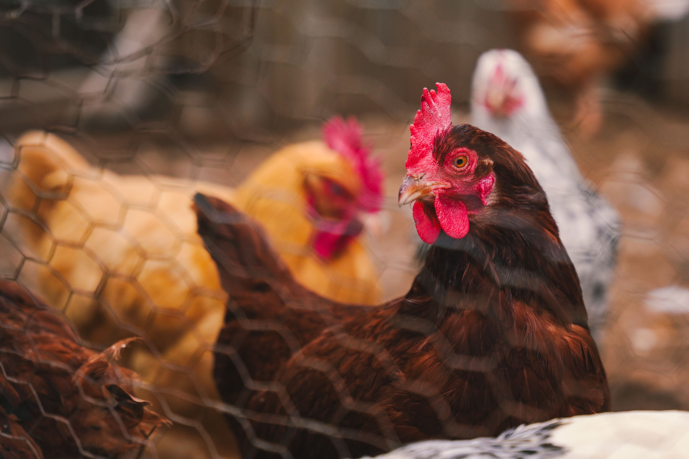

About Us
Shamba La Nyama is a leading provider of fresh chicken, goat and pork in Dodoma. We are committed to delivering high-quality meat products directly from our farm to your home.

Our Story
Founded in 2025, Shamba La Nyama has grown to become a trusted name in the meat industry in Dodoma. Our farm is dedicated to raising healthy and happy animals, ensuring that our customers receive the best quality meat products.
We take pride in our sustainable farming practices, which prioritize animal welfare and environmental responsibility. Our team of experienced farmers and butchers work tirelessly to maintain the highest standards of quality and hygiene.
At Shamba La Nyama, we believe that everyone deserves access to fresh, nutritious meat. That's why we offer a variety of products, including whole chickens, fresh cut pieces, and premium cuts of goat and pork.
View ProductsOur Mission
To provide fresh, healthy and affordable meat while delivering excellent customer service and building lasting relationships with our customers.
Our Vision
To be the leading provider of fresh meat in Dodoma, known for our commitment to quality, sustainability and customer satisfaction.
Our Values
We value integrity, transparency, and respect for our customers, employees, and the environment. We are dedicated to continuous improvement and innovation in our products and services.
Why Choose Us?
🐔 Fresh Products
Fresh meat sourced directly from our farm every day.
🚚 Fast Delivery
Reliable delivery across Dodoma for your convenience.
💰 Affordable Prices
Premium quality meat at prices that offer great value.
⭐ Trusted Quality
We maintain high hygiene and quality standards in every order.